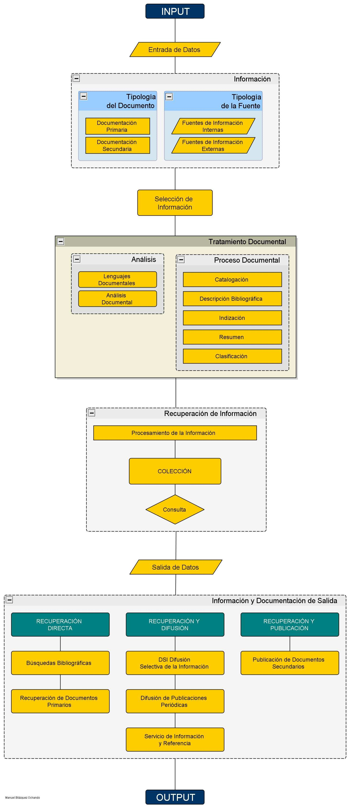
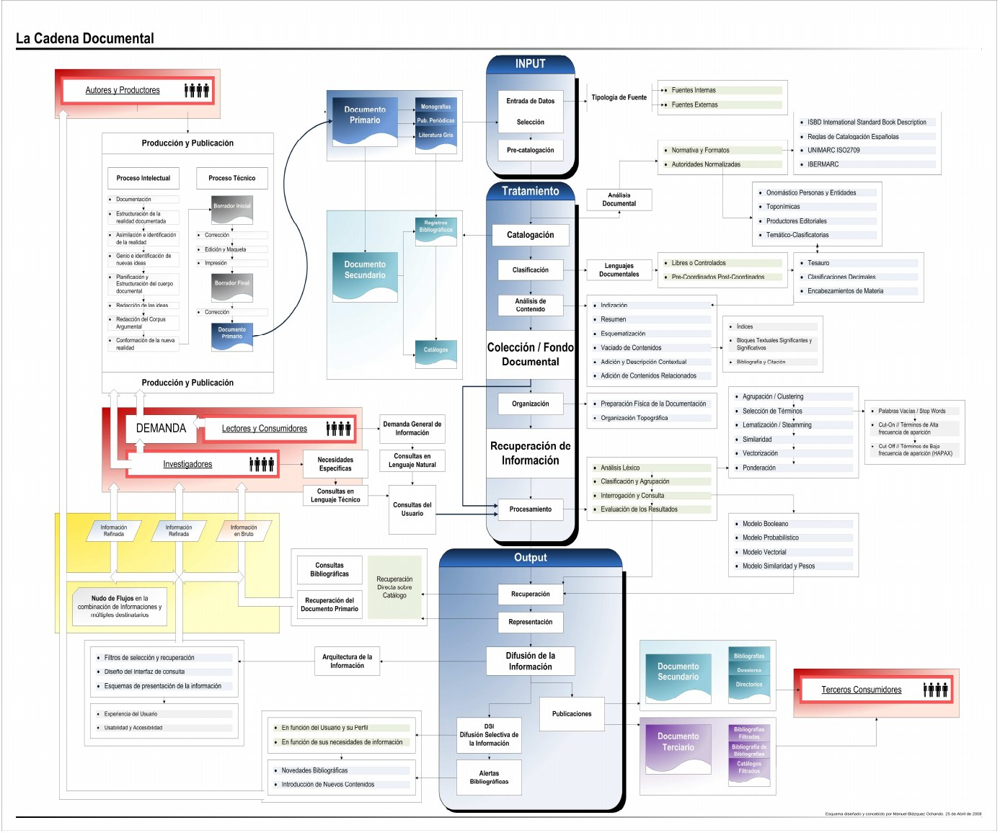

Introducción al tema
Este tema recorre el nacimiento de la Documentación como ciencia, explica qué es y qué estudia, y presenta la cadena documental: el proceso que siguen los documentos desde que entran en un centro de información hasta que llegan al usuario.
1. La Documentación como disciplina científica. Un poco de historia
La Documentación es una ciencia moderna, de finales del siglo XIX, aunque archivos y bibliotecas han existido siempre. Nace en Bruselas y llega a España ya en el siglo XX.
Paul Otlet, Henri La Fontaine y el Instituto de Bibliografía de Bruselas (1895)
En 1895, Paul Otlet y Henri La Fontaine fundaron el Instituto de Bibliografía de Bruselas (IBB). Su objetivo era crear una bibliografía universal que recogiera todas las publicaciones y documentos existentes.
El proyecto fracasó, porque era imposible reunir todas las fuentes de información, pero dejó una herencia muy importante para la disciplina.
Las tres herencias del Instituto: Documentación moderna, CDU y FID
- El nacimiento de la Documentación en sentido moderno.
- La Clasificación Decimal Universal (CDU): un sistema que identifica el contenido de los documentos mediante códigos numéricos basados en un principio universal.
- La Federación Internacional de Documentación (FID): el instituto se transformó en este organismo, que se ocupa de los temas internacionales. A partir de aquí la información se empieza a entender como difusión, para hacerla llegar a otras personas.
La figura del documentalista
Otlet y La Fontaine institucionalizaron la información científica, cuyos precedentes son las bibliografías del Renacimiento y las primeras revistas científicas del siglo XVII. Dieron al concepto de documento un alcance universal y pusieron el foco en las necesidades del usuario, no solo en la biblioteca.
De ahí surge la figura del documentalista: un experto en el contenido de las materias que hace de puente entre el productor de la información y el usuario.
Los orígenes en España: Ortega y Gasset, el CSIC y el CINDOC
En España los orígenes se sitúan en 1935, con el Congreso Internacional de Bibliotecarios de Madrid. Allí José Ortega y Gasset dio una lección magistral que luego publicó como Misión del bibliotecario: ante el “torrente de libros”, el bibliotecario debe actuar como filtro y analizar la información.
El desarrollo real llega en los años 70. El CSIC creó el Centro de Información y Documentación (CID), que después pasó a llamarse CINDOC (Centro de Información y Documentación Científica). Fue el centro documental más importante de España, con sedes en todo el país y, sobre todo, bases de datos.
La Documentación como disciplina universitaria
Como disciplina universitaria es reciente: en 1975 se creó la primera plaza de profesor de Documentación en la Universidad Complutense de Madrid, en 1982 la Diplomatura y en 1994 la Licenciatura.
2. ¿Qué es la Documentación?
La Documentación estudia cómo se recuperan, tratan y difunden los mensajes informativos para que el usuario los aproveche y genere nuevo conocimiento o tome decisiones.
Definición de Documentación
Las Ciencias de la Documentación estudian la parte del proceso documental que consiste en la recuperación y difusión de mensajes y su aprovechamiento por el usuario, para que sirvan de base para obtener nuevo conocimiento o tomar decisiones.
De forma más breve: la Documentación es la ciencia general que estudia el proceso de adecuación y transmisión de las fuentes para obtener nuevo conocimiento.
El objeto de estudio: procesos documentales e instituciones documentales
Su objeto principal es el proceso documental, es decir, la cadena documental: se recuperan mensajes emitidos anteriormente, se conservan y se tratan técnicamente, y se difunden transformados para que sirvan como fuente de información.
En síntesis, la Documentación estudia dos cosas:
- Los procesos documentales: la cadena documental, o sea, el trabajo técnico con los documentos.
- Las instituciones documentales: los centros donde se trabaja con documentos, que son los archivos, las bibliotecas y los centros de documentación.
El documentalista como profesional de la información
El término documentalista engloba a los profesionales que participan en las distintas fases del proceso informativo-documental: producción, tratamiento y difusión de la información.
Aunque mantengan sus nombres tradicionales (archiveros, bibliotecarios, bibliógrafos, documentalistas…), todos forman parte del marco más amplio del profesional de la Información y Documentación.
Relación con otras disciplinas: Lingüística, Informática, Bibliometría y Ciencias Jurídicas
La Documentación es una disciplina interdisciplinar, relacionada con:
- Lingüística: trabaja con el lenguaje y con textos que usan lenguajes especializados.
- Informática: es su herramienta fundamental. De su unión con las telecomunicaciones surge la teledocumentación.
- Bibliometría: aplica métodos estadísticos para contar y analizar las fuentes de información.
- Ciencias Jurídicas: se ocupan de los aspectos legales y sociales de la transmisión de información.
3. La cadena documental
La cadena documental es uno de los fundamentos de la Documentación. Sistematiza y representa las fases del proceso documental, y sirve para cualquier centro que trabaje con información: archivos, bibliotecas o centros de documentación.
Fases comunes: entrada (input), tratamiento y salida (output)
En todos los casos hay tres áreas bien diferenciadas:
- Entrada de información (input).
- Tratamiento de la información.
- Salida o difusión (output).
Existen dos modelos: la cadena documental básica y la cadena documental completa.
3A. Modelo de cadena documental básica
El modelo básico se representa como un diagrama de flujo (Figura 1) con tres fases: entrada de datos, tratamiento y recuperación de información y salida de datos.

Entrada de datos (input): documentos primarios y secundarios
En la entrada se selecciona la información, que puede venir de una fuente interna o externa y estar en un documento primario o secundario:
- Documentos primarios: contienen información original y de autoría, como libros, revistas o una noticia de periódico.
- Documentos secundarios: se elaboran a partir de los primarios analizándolos y tratándolos; los describen, sintetizan, recopilan e indizan para que sea más fácil localizarlos. Por ejemplo: catálogos, boletines de sumarios, índices de citas o bases de datos de referencias.
Tratamiento documental y recuperación de información
El tratamiento documental consiste en catalogar y clasificar los documentos (sobre todo monografías) y en indizarlos y resumirlos (sobre todo publicaciones periódicas y artículos).
El resultado es una ficha de referencia con puntos de acceso para localizar el documento original. Con todas ellas se forma un fondo (colección, catálogo o base de datos) sobre el que se pueden hacer consultas. Esto es la recuperación de información (information retrieval), esencial para aprovechar la información primaria y secundaria.
Salida de datos (output)
En la salida se difunde la información y se da acceso a ella. La recuperación de información permite:
- Búsquedas bibliográficas y recuperación de documentos primarios.
- Difusión Selectiva de la Información (DSI).
- Difusión de publicaciones periódicas y materiales especiales.
- Servicios de información y referencia.
- Publicación de documentación secundaria o terciaria: repertorios, guías, bibliografías especializadas…
3B. Modelo de cadena documental completa
La cadena documental completa abarca todo el recorrido del documento, desde su creación hasta que llega a un usuario o grupo de usuarios (Figura 2). Ofrece una visión general de lo que se estudia en el Grado, en asignaturas como Catalogación, Normalización, Sistemas de Representación del Conocimiento o Recuperación de Información.

Entrada de datos (input): fuentes internas y externas, precatalogación
La entrada varía según el tipo de fuente: interna (el fondo propio del archivo, la biblioteca o el centro) o externa (bases de datos y suscripciones a otros centros). También influye el tipo de adquisición.
En las bibliotecas, los documentos pueden recibir aquí un primer tratamiento sencillo, la precatalogación o descripción previa.
Tratamiento documental: normas de descripción (ISBD, UNIMARC, MARC 21), autoridades y normalización
Los documentos primarios reciben un tratamiento completo mediante el análisis documental, que sigue normas internacionales de descripción como las ISBD (Descripción Bibliográfica Internacional Normalizada), UNIMARC, las Reglas de Catalogación y el formato MARC 21.
También son fundamentales las autoridades y la normalización: describir de forma unificada los puntos de acceso, como los nombres de personas y entidades, los topónimos, las editoriales y las materias.
Catalogación, clasificación y lenguajes documentales (CDU, Dewey, encabezamientos de materia, tesauros)
La catalogación y la clasificación van unidas. Ambas buscan una descripción completa que defina con exactitud el contenido del documento y sus posibles formas de recuperarlo.
Para clasificar se usan lenguajes documentales: clasificaciones decimales como la CDU o la Dewey, encabezamientos de materia y tesauros. Con ellos se obtienen números de clasificación, materias o descriptores que describen el contenido, la forma e incluso aspectos cronológicos y de ubicación.
Análisis de contenido: indización, resumen y otros tratamientos
Según la política del centro (sobre todo en los centros de documentación), se puede hacer un análisis de contenido mediante indización, resumen, esquematización, vaciado de contenidos o vinculación con documentos relacionados. Se aplica sobre todo a publicaciones periódicas.
Cada tipo de documento tiene su tratamiento: por ejemplo, el minutado en los audiovisuales o la asignación de descriptores en el material sonoro. De todo este proceso sale el documento secundario o registro bibliográfico, y con todos ellos se forma la colección o fondo documental.
Organización: preparación física, tejuelo y organización topográfica
Antes de la recuperación está la organización: la preparación física de los documentos y su organización topográfica (dónde se colocan). Incluye el tejuelado, que consiste en pegar en el lomo del libro una etiqueta con su signatura para identificarlo y localizarlo.
En las bibliotecas digitales se usan repositorios, carpetas y rutas de acceso a los archivos, además de metadatos que guardan los datos de acceso y localización.
Recuperación de información: procesamiento y modelos (booleano, probabilístico, vectorial)
Con todo bien descrito, clasificado y organizado se puede recuperar la información. Los sistemas suelen trabajar sobre el catálogo o las bases de datos, lo que permite automatizar la cadena documental.
La recuperación se basa en el procesamiento de la colección: análisis léxico, agrupación (clustering), selección de términos, similaridad, vectorización y ponderación. Así el sistema identifica los términos que mejor representan cada documento y los compara con la consulta del usuario mediante modelos de recuperación: booleano, probabilístico, vectorial y de similaridad.
Los resultados no siempre son los deseados, por una consulta mal formulada o un punto de acceso incorrecto. Los sistemas actuales pueden evaluarlo, redirigir a términos normalizados y mejorar la valoración de los documentos.
Salida de datos (output): la difusión de la información
La difusión de la información es el proceso por el que se transmite al usuario la información que necesita, o se le da la posibilidad de obtenerla. Es la operación documental de salida, porque todo centro recoge y procesa información para darla a conocer.
Es un proceso activo: el centro debe estudiar a sus usuarios para saber qué información necesitan y elegir el sistema de difusión más adecuado para cada caso.
Tipos de difusión: documentos primarios, referencias y DSI
- Difusión de documentos primarios: el usuario obtiene el propio documento, por ejemplo en préstamo durante un tiempo determinado.
- Difusión de referencias: el centro elabora publicaciones secundarias con referencias de documentos, como boletines de adquisiciones, bibliografías de novedades, bibliografías retrospectivas o analíticas, boletines de resúmenes, índices o boletines de sumarios.
- Difusión Selectiva de la Información (DSI): el centro envía información “a la carta” a cada usuario según sus temas de interés. Es personalizada, periódica y selectiva, y se basa en un perfil de interés; así el usuario recibe las novedades sin tener que pedirlas ni acudir al centro.
Ejemplos de DSI: BioMail, collaborative filtering y RSS
- BioMail: servicio gratuito para investigadores médicos y biólogos que hace búsquedas periódicas en la base de datos MedLine sobre los temas de interés del usuario.
- Collaborative filtering (filtrado colaborativo): un paso más allá de la DSI, propio de la gestión del conocimiento en empresas y organizaciones. Un grupo de expertos selecciona información y experiencias y las dirige a las personas a las que pueden ser útiles.
- RSS (Rich Site Summary, sindicación de contenidos): un formato de distribución de contenidos que permite recibir los titulares y novedades de cientos de webs sin tener que entrar en ellas una por una.
Vídeos
Enlaces de interés
- Mundaneum
Centro de archivos de Mons (Bélgica) que conserva el legado de Paul Otlet y Henri La Fontaine.
- Paul Otlet (Wikipedia)
Biografía del padre de la Documentación moderna y de su proyecto de bibliografía universal.
- UDC Consortium
Organismo que mantiene y actualiza la Clasificación Decimal Universal (CDU).
- CSIC
Consejo Superior de Investigaciones Científicas, del que dependía el CINDOC.
- MARC Standards (Library of Congress)
Documentación oficial del formato MARC 21 que se usa en catalogación.
- IFLA
Federación Internacional de Asociaciones de Bibliotecarios, responsable de las normas ISBD.
Reflexión personal
Me ha resultado muy interesante descubrir que la Documentación nació de un proyecto tan ambicioso como el de Paul Otlet y Henri La Fontaine: querer reunir todo el conocimiento del mundo. Aunque fracasara, sus ideas, como la CDU o pensar en las necesidades del usuario, siguen vigentes, y muchos lo consideran un precursor de Internet.
La cadena documental me ha ayudado a ver que detrás de cada búsqueda que hacemos hay mucho trabajo: seleccionar, catalogar, clasificar, indizar y organizar los documentos para que después se puedan recuperar. Es algo que se parece mucho a cómo funcionan hoy los buscadores y las webs, donde los metadatos y una buena organización deciden si un contenido se encuentra o no.
También me ha parecido útil la parte de la difusión, sobre todo la DSI y el RSS, porque demuestran que el objetivo final de todo el proceso es que la información llegue a quien la necesita.
Conceptos clave
- Documentación: ciencia que estudia la adecuación y transmisión de las fuentes para obtener nuevo conocimiento.
- IBB: Instituto de Bibliografía de Bruselas (1895), fundado por Otlet y La Fontaine.
- CDU: Clasificación Decimal Universal.
- FID: Federación Internacional de Documentación.
- Documentalista: puente entre el productor de la información y el usuario.
- CINDOC: Centro de Información y Documentación Científica del CSIC.
- Proceso documental o cadena documental: entrada (input), tratamiento y salida (output).
- Documento primario / secundario: información original frente a documentos que describen los primarios.
- Catalogación, clasificación, indización y resumen: técnicas del tratamiento documental.
- ISBD, UNIMARC, MARC 21: normas y formatos internacionales de descripción.
- Lenguajes documentales: CDU, Dewey, encabezamientos de materia y tesauros.
- Tejuelo: etiqueta del lomo con la signatura topográfica.
- Recuperación de información (information retrieval) y sus modelos: booleano, probabilístico y vectorial.
- Difusión de la información y DSI: Difusión Selectiva de la Información.
- RSS: sindicación de contenidos.
Referencias
- Eito Brun, R. (1999). KnowledgeSpace: un portal hacia el conocimiento empresarial. El profesional de la información, 3, 31-37.
- Martínez Comeche, J. A. (1995). La difusión documental. En Teoría de la información documental y de las instituciones documentales. Madrid: Síntesis.
- Serrano Cobos, J. (2004). Google, DSI y la sindicación de contenidos mediante RDF/RSS. El profesional de la información, 1.
- Silva, A. (2004). RSS, informarse sin navegar. Consumer.es.
- Valle Gastaminza, F. del (1996). Difusión de la información. Metodología y descripción de los instrumentos informativos. En Manual de Información y Documentación. Madrid: Pirámide.
- Gálvez, C. Tema 2. Documentación e información, evolución de la disciplina. Introducción a la Información y a la Documentación (apuntes de la asignatura).